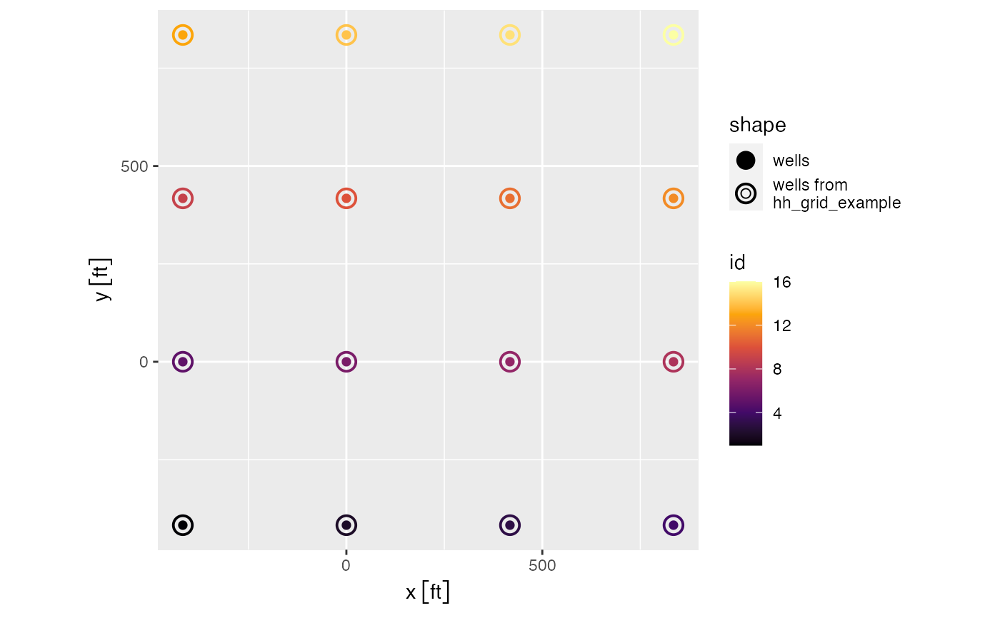
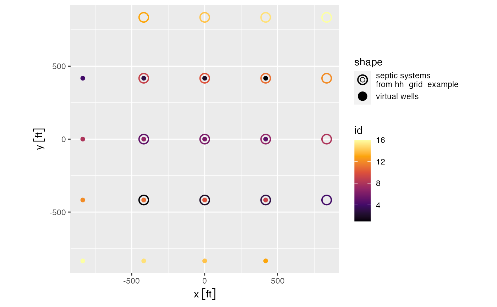

get_septic_well_array.RdThis function prepares an array of septic systems or private
wells for the groundwater model function
get_intersection_probability(). This function takes as input an array
of septic systems or wells with (x,y) coordinates where (0,0) is the location
of the domestic well.
Option 1:
If the goal is to calculate the probability that a single septic system at
(0,0) contaminates any well within a set of wells at (x, y), then
hh_array should represent a set of wells and hh_array_type
should be set to "wells". In this case, the x-y locations in hh_array
are kept and each well is parameterized with with a well_rect.
Option 2:
Alternatively, if the goal is to calculate the probability that a single well
at (0,0) is contaminated by any of a set of septic systems at (x, y), then
hh_array represents septic systems and hh_array_type should be
set to "septic". In this case, the function translates a set of point-source
septic fields that might contaminate the well into a set of virtual wells to
use with get_intersection_probability(). Furthermore, each virtual
well is parameterized with with a well_rect. In order to calculate the
probability of a septic system contaminating a well, the septic system is
treated as a virtual well identical to the actual well and located directly
opposite original septic system at (-xi, -yi). In other words, the septic
array is translated to a well array rotated 180 degrees around the domestic
well. The problem of determining contamination can then be treated by
considering the probability that a particle introduced at (0,0) will
intersect the virtual wells at (-xi, -yi).
get_septic_well_array(hh_array, hh_array_type, ...)
| hh_array | array of septic or well systems with coordinates [x, y] as units objects and (optionally) z1, z2, rs |
|---|---|
| hh_array_type | either "septic" or "well" describing the
|
| ... | See details for optional inputs |
Optial input in ... can include:
codez_range: units vector of length 2 representing depth from the water table surface to the top and bottom of the well
rs: units object
representing the radius of the well source area
# Generate household array library(units) # Option 1: Prepare array of wells -- see Details wells <- get_septic_well_array(hh_grid_example, "well") # plot the array of wells library(ggplot2) library(ggforce) # needed to plot axes using units objects ggplot(mapping = aes(x, y, color = id)) + geom_point(data = hh_grid_example, aes(shape = "wells from\nhh_grid_example"), size = 4, stroke = 1) + geom_point(data = wells, aes(shape = "wells"), size = 2) + scale_shape_manual(values = c(16, 1)) + scale_color_viridis_c(option = "B") + coord_equal()# Option 2: Prepare array of virtual wells -- see Details virtual_well_array <- get_septic_well_array(hh_grid_example, "septic") # plot the flipped array of virtual wells library(ggplot2) library(ggforce) # needed to plot axes using units objects ggplot(mapping = aes(x, y, color = id)) + geom_point(data = hh_grid_example, aes(shape = "septic systems\nfrom hh_grid_example"), size = 4, stroke = 1) + geom_point(data = virtual_well_array, aes(shape = "virtual wells"), size = 2) + scale_shape_manual(values = c(1, 16)) + scale_color_viridis_c(option = "B") + coord_equal()